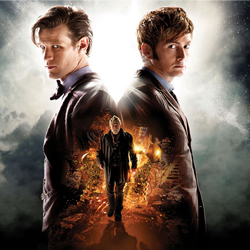

| Home | The Doctors | The Companions | The Villains |
PremiseDoctor Who follows the adventures of the primary character, a rogue Time Lord from the planet Gallifrey who simply goes by the name "Doctor". He fled from Gallifrey in a stolen Type 40 TARDIS time machine - "Time and Relative Dimension in Space" - which allows him to travel across time and space. Due to a malfunction of the TARDIS' "chameleon circuit", which normally allows the TARDIS to take on the appearance of local objects to disguise it from others, the Doctor's TARDIS remains fixed as a blue British Police box. The Doctor rarely travels alone, and often brings one or more companions to share these adventures with, typically humans as he has found a fascination with the planet Earth. He often finds events that pique his curiosity while trying to prevent evil forces from harming innocent people or changing history, using only his ingenuity and minimal resources, such as his versatile sonic screwdriver. As a Time Lord, the Doctor has the ability to regenerate when his body is mortally damaged, taking on a new appearance and personality. The Doctor has gained numerous reoccurring enemies during his travels, including the Daleks, the Cybermen, and another renegade Time Lord, the Master.
|